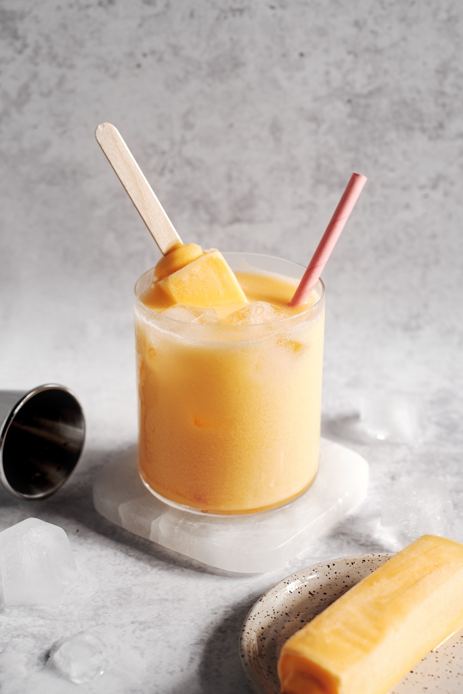

Mango Melona Soju Cocktail

Description
Looking for a creamy sweet cocktail that isn't too boozy? This Melona ice cream soju cocktail is perfect for you!
Refreshing and tasty, you'll feel like you are on a beach enjoying an ice cream bar with a twist of booze.
Ingredients
- Ice
- 4oz of Mango soju
- 4oz of Sprite or 7up (Any light tasting soda or sparkling water works)
- 1 mango Melona ice cream bar
Step by step
Preparing the cocktail
- Fill glass about halfway with ice.
- Pour in soju and soda of choice.
- Add in a whole melona bar and use it as a stir stick until the ice cream melts into the drink.